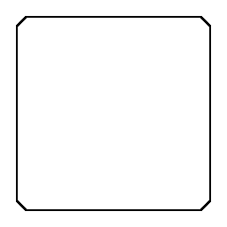
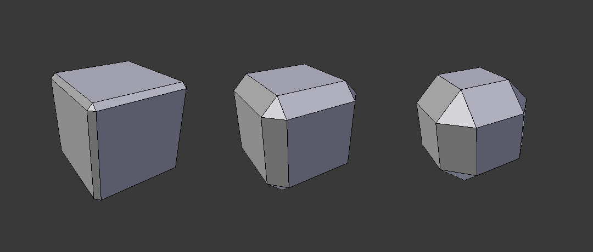

Bevel Modifier¶
The Bevel Modifier adds the ability to bevel the edges of the mesh it is applied to, allowing control of how and where the bevel is applied to the mesh.
The Bevel Modifier is a non-destructive alternative to the Bevel Operation in Edit Mode.

Not beveled. |

Beveled. |
{kind=link}
The images above show the side views of a plain (not beveled) cube and a beveled one.
Options¶

Bevel Modifier panel.
- Width
The size of the bevel affect. See Width Method below.
Three Cubes with 0.1, 0.3 and 0.5 bevel Widths.
- Segments
- The number of edge loops added along the bevel's face.
- Profile
- The shape of the bevel, from concave to convex. It has no effect if Segments is less than 2.
- Material
- The index of the material slot to use for the bevel. When set to -1, the material of the nearest original face will be used.
- Only Vertices
When enabled, only the areas near vertices are beveled; the edges are left not beveled.

Three cubes with 0.1, 0.3 and 0.5 bevel Widths, with Only Vertices option enabled.
- Clamp Overlap
- When enabled, the width of each beveled edge will be limited such that they cannot intersect each other. Edges that are far apart will still bevel with the full width, only edges too close to each other are affected.
- Loop Slide
- If there are unbeveled edges along with beveled edges into a vertex, the bevel tries to slide along those edges when possible. Turning the option off can lead to more even bevel widths.
- Limit Method
Used to control where a bevel is applied to the mesh.
- None
- No limit, all edges will be beveled.
- Angle
- Only edges where the adjacent faces form an angle smaller than the defined threshold will be beveled. Intended to allow you to bevel only the sharp edges of an object without affecting its smooth surfaces.
- Weight
- Use each edge's bevel weight to determine the width of the bevel. When the bevel weight is 0.0, no bevel is applied. See here about adjusting bevel weights.
- Vertex Group
- Use weights from a vertex group to determine the width of the bevel. When the vertex weight is 0.0, no bevel is applied. An edge is only beveled if both of its vertices are in the vertex group. See here about adjusting vertex group weights.
- Width Method
Declares how Width will be interpreted to determine the amount of bevel.

Width methods.
- Offset
- Value is interpreted as the distance from the original edge to the edge of the beveled face.
- Width
- Value is interpreted as the distance between the two new edges formed by the bevel.
- Depth
- Value is the perpendicular distance from the new bevel face to original edge.
- Percent
- Similar to Offset but the value is interpreted as a percentage of the adjacent edge length.
{kind=link}